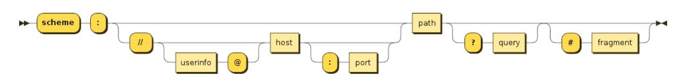

# 认识 BOM
- JavaScript 有一个非常重要的运行环境就是浏览器，而且浏览器本身又作为一个应用程序需要对其本身进行操作，所以通常浏览器会有对应的对象模型（BOM，Browser Object Model）。
- 我们可以将 BOM 看成是连接 JavaScript 脚本与浏览器窗口的桥梁。
- BOM 主要包括一下的对象模型：
- window：包括全局属性、方法，控制浏览器窗口相关的属性、方法；
- location：浏览器连接到的对象的位置（URL）；
- history：操作浏览器的历史；
- document：当前窗口操作文档的对象；
- window 对象在浏览器中有两个身份：
- 身份一：全局对象。
- 我们知道 ECMAScript 其实是有一个全局对象的，这个全局对象在 Node 中是 global；
- 在浏览器中就是 window 对象；
- 身份二：浏览器窗口对象。
- 作为浏览器窗口时，提供了对浏览器操作的相关的 API；
# Window 全局对象
- 在浏览器中，window 对象就是之前经常提到的全局对象，也就是我们之前提到过 GO 对象：
- 比如在全局通过 var 声明的变量，会被添加到 GO 中，也就是会被添加到 window 上；
- 比如 window 默认给我们提供了全局的函数和类：setTimeout、Math、Date、Object 等；
- 通过 var 声明的变量，全局提供的类和方法：
| var message = 'Hello World' |
| function foo(){ |
| console.log('foo function') |
| } |
| window.console.log(window.message) |
| window.foo() |
| |
| window.setTimeout(() => window.console.log('setTimeout'), 1000) |
| ... |
- 这些用法是我们之前讲过的，并且也是作为 JavaScript 语言本身所拥有的一些特性。
- 那么接下来我们来看一下作为窗口对象，它拥有哪些特性。
# Window 窗口对象
- 事实上 window 对象上肩负的重担是非常大的：
- 第一：包含大量的属性，localStorage、console、location、history、screenX、scrollX 等等（大概 60 + 个属性）；
- 第二：包含大量的方法，alert、close、scrollTo、open 等等（大概 40 + 个方法）；
- 第三：包含大量的事件，focus、blur、load、hashchange 等等（大概 30 + 个事件）；
- 第四：包含从 EventTarget 继承过来的方法，addEventListener、removeEventListener、dispatchEvent 方法；
- 那么这些大量的属性、方法、事件在哪里查看呢？
- MDN 文档：https://developer.mozilla.org/zh-CN/docs/Web/API/Window
- 查看 MDN 文档时，我们会发现有很多不同的符号，这里我解释一下是什么意思：
- 删除符号：表示这个 API 已经废弃，不推荐继续使用了；
- 点踩符号：表示这个 API 不属于 W3C 规范，某些浏览器有实现（所以兼容性的问题）；
- 实验符号：该 API 是实验性特性，以后可能会修改，并且存在兼容性问题；
# window 常见的属性
# window.screenX
- 返回浏览器左边界到操作系统桌面左边界的水平距离
- screeX 是返回相对于当前屏幕的 X 坐标，有多块屏幕以主屏幕为准
screeX 为浏览器左边到系统桌面左边的像素值- 不妨将窗口缩小打印试试吧～
| if (window.screenX) console.log(window.screenX) |
# window.screenY
-
screenY 距离屏幕顶部的像素值。
-
不妨将窗口缩小打印试试吧～
| if (window.screenY) console.log(window.screenY) |
# window.outerHeight
Window.outerHeight 获取整个浏览器窗口的高度（单位：像素），包括侧边栏（如果存在）、窗口镶边（window chrome）和窗口调正边框（window resizing borders/handles）- 该属性为只读，没有默认值。
outWindowHeight 为窗口的外层的高度
| outWindowHeight = window.outerHeight; |
| console.log(outWindowHeight) |
# Window.innerHeight
- 浏览器窗口的视口（viewport）高度（以像素为单位）；如果有水平滚动条，也包括滚动条高度
window.innerHeight 属性为只读，且没有默认值intViewportHeight 为浏览器窗口的视口的高度
| const intViewportHeight = window.innerHeight; |
| console.log(intViewportHeight) |
| if (window.scrollX) console.log(window.scrollX) |
pageXOffset 属性是 scrollX 属性的别名
| window.pageXOffset === window.scrollX |
| if (window.scrollY) console.log(window.scrollY) |
pageYOffset 属性是 scrollY 属性的别名
| window.pageYOffset === window.scrollY |
# window 常见的方法
- 滚动到文档中的某个坐标
x-coord 是文档中的横轴坐标。y-coord 是文档中的纵轴坐标。window.scrollTo(x-coord, y-coord)
window.scrollTo(options)options 是一个包含三个属性的对象:left 等同于 x-coordtop 等同于 y-coord
| window.scrollTo({ |
| left: 100, |
| top: 100 |
| }) |
behavior 类型 String, 表示滚动行为，支持参数 smooth (平滑滚动),instant (瞬间滚动), 默认值 auto
| window.scrollTo({ |
| top: 100, |
| behavior: "smooth" |
| }) |
# open()
Window 接口的 open() 方法，是用指定的名称将指定的资源加载到浏览器上下文（窗口 window ，内嵌框架 iframe 或者标签 tab ）。如果没有指定名称，则一个新的窗口会被打开并且指定的资源会被加载进这个窗口的浏览器上下文中。
| let windowObjectReference = window.open(strUrl, strWindowName, [strWindowFeatures]); |
- strUrl === 要在新打开的窗口中加载的 URL。
- strWindowName === 新窗口的名称。
- strWindowFeatures === 一个可选参数，列出新窗口的特征 (大小，位置，滚动条等) 作为一个
DOMString 。
- 详情参考
MDN https://developer.mozilla.org/zh-CN/docs/Web/API/Window/open
| window.open("https://nekoaimer.com", "_self") |
| |
| window.open("https://nekoaimer.com", "_target") |
# close()
Window.close() 方法关闭当前窗口或某个指定的窗口- 当直接调用 window 对象的
close() 方法而非在一个 window 实例上调用 close() 时，浏览器会关闭最前面的窗口，无论是不是你的脚本创建的这个窗口。
# window 常见的事件
# load()
| window.addEventListener('load', (event) => console.log('window窗口加载完毕~')) |
| window.onload = function() { |
| console.log("window窗口加载完毕~") |
| } |
# focus()
- focus 事件在元素获取焦点时触发。这个事件和
focusin 最大的区别仅仅在于后者会事件冒泡.
- 当点击屏幕获取焦点打印信息
| window.addEventListener('focus', (event) => console.log('window窗口获取焦点~')) |
| window.onfocus = function() { |
| console.log("window窗口获取焦点~") |
| } |
# blur()
- 将焦点移出顶层窗口
window.blur()- 当 window 窗口失去焦点打印信息
| window.addEventListener('blur', (event) => console.log('window窗口失去焦点~')) |
| window.onblur = function() { |
| console.log("window窗口失去焦点~") |
| } |
# Location: hash
| console.log(location.hash === ‘‘) |
- 将
location.hash 修改为 nekoaimer
| console.log(location.hash) |
| |
| console.log(location.hash === '') |
| |
| console.log(location.hash === '#nekoaimer') |
# EventTarget
- Window 继承自 EventTarget，所以会继承其中的属性和方法：
- addEventListener：注册某个事件类型以及事件处理函数；
- removeEventListener：移除某个事件类型以及事件处理函数；
- dispatchEvent：派发某个事件类型到 EventTarget 上；
# addEventListener()
- EventTarget.addEventListener() 方法将指定的监听器注册到
EventTarget 上，当该对象触发指定的事件时，指定的回调函数就会被执行。 事件目标可以是一个文档上的元素 Element , Document 和 Window 或者任何其他支持事件的对象 (比如 XMLHttpRequest ) 。
addEventListener() 的工作原理是将实现 EventListener 的函数或对象添加到调用它的 EventTarget 上的指定事件类型的事件侦听器列表中type 表示监听事件类型的字符串listener 当所监听的事件类型触发时，会接收到一个事件通知（实现了 Event 接口的对象）对象。 listener 必须是一个实现了 EventListener 接口的对象，或者是一个函数。有关回调本身的详细信息，请参阅 The event listener callback- 当
window 点击了打印 console.log 信息
| window.addEventListener("click", () => console.log("window发生了点击")) |
options 可选 一个指定有关 listener 属性的可选参数对象。
capture : Boolean ，表示 listener 会在该类型的事件捕获阶段传播到该 EventTarget 时触发。once : Boolean ，表示 listener 在添加之后最多只调用一次。如果是 true， listener 会在其被调用之后自动移除。passive : Boolean ，设置为 true 时，表示 listener 永远不会调用 preventDefault() 。如果 listener 仍然调用了这个函数，客户端将会忽略它并抛出一个控制台警告。查看 使用 passive 改善的滚屏性能 了解更多.signal ： AbortSignal ，该 AbortSignal 的 abort() 方法被调用时，监听器会被移除。
| const clickHandler = () => console.log("window发生了点击") |
| |
| window.addEventListener("click", clickHandler, {once: true}) |
| window.addEventListener("click", clickHandler, {once: false}) |
| const clickHandler = () => console.log("window发生了点击") |
| |
| const res = window.addEventListener("click", clickHandler, { once: true }) |
| console.log(res) |
- 详情参考
MDN https://developer.mozilla.org/zh-CN/docs/Web/API/EventTarget/addEventListener
# removeEventListener()
- 删除使用
EventTarget.addEventListener() 方法添加的事件。使用事件类型，事件侦听器函数本身，以及可能影响匹配过程的各种可选择的选项的组合来标识要删除的事件侦听器。
type 一个字符串，表示需要移除的事件类型，如 "click"listener 需要从目标事件移除的 EventListener 函数。options 可选 一个指定事件侦听器特征的可选对象
capture : 一个 Boolean 表示这个类型的事件将会被派遣到已经注册的侦听器，然后再派遣到 DOM 树中它下面的任何 EventTargetmozSystemGroup : 仅可运行于 XBL 或者 Firefox Chrome，它是一个 Boolean ，用于定义是否将侦听器添加到系统组。
- 详情参考
MDN https://developer.mozilla.org/zh-CN/docs/Web/API/EventTarget/removeEventListener
| const clickHandler = () => { |
| console.log("window发生了点击") |
| window.removeEventListener("click", clickHandler) |
| } |
| |
| window.addEventListener("click", clickHandler) |
- 点击一次后就取消事件，实现
once 效果
- 返回值是
undefined
| const res = window.addEventListener("click", clickHandler) |
| console.log(res) |
# dispatchEvent()
- 向一个指定的事件目标派发一个事件，并以合适的顺序同步调用目标元素相关的事件处理函数。标准事件处理规则 (包括事件捕获和可选的冒泡过程) 同样适用于通过手动的使用
dispatchEvent() 方法派发的事件
| cancelled = !target.dispatchEvent(event) |
event 是要被派发的事件对象target 被用来初始化 事件 和 决定将会触发 目标
| window.addEventListener("nekoaimer", (event) => console.log("监听到了nekoaimer 事件")) |
| |
| window.dispatchEvent(new Event("nekoaimer")) |
| const res = window.dispatchEvent(new Event("nekoaimer")) |
| console.log(res) |
# Location 对象常见的属性
| console.log(location.protocol) |
| |
| console.log(location.host) |
| |
| console.log(location.hostname) |
| |
| console.log(location.port) |
# Location 对象常见的方法
- 我们会发现 location 其实是 URL 的一个抽象实现：

- location 有如下常用的方法：
- assign：赋值一个新的 URL，并且跳转到该 URL 中
- replace：打开一个新的 URL，并且跳转到该 URL 中（不同的是不会在浏览记录中留下之前的记录）
- reload：重新加载页面，可以传入一个 Boolean 类型
# assign()
Location.assign() 方法会触发窗口加载并显示指定的 URL 的内容url 一个包含了要跳转到的链接的 DOMString 。location.assign(url)
| location.assign("http://nekoaimer.com") |
| location.href = "http://nekoaimer.com" |
# replace()
**Location** .replace() 方法以给定的 URL 来替换当前的资源。 与 assign() 方法 不同的是，调用 replace() 方法后，当前页面不会保存到会话历史中（session History ），这样，用户点击回退按钮时，将不会再跳转到该页面url DOMString 类型，指定所导航到的页面的 URL 地址。object.replace(url)
| location.replace("http://nekoaimer.com") |
# reload()
Location.reload() 方法用来刷新当前页面。该方法只有一个参数，当值为 true 时，将强制浏览器从服务器加载页面资源，当值为 false 或者未传参时，浏览器则可能从缓存中读取页面
| object.reload(forcedReload) |
forcedReload 可选 该参数要求为 布尔 (en-US) 类型，当取值为 true 时，将强制浏览器从服务器重新获取当前页面资源，而不是从浏览器的缓存中读取，如果取值为 false 或不传该参数时，浏览器则可能会从缓存中读取当前页面
| |
| |
| window.location.reload(true) |
- 详情查看 MDN https://developer.mozilla.org/zh-CN/docs/Web/API/Location/reload
# history 对象常见属性和方法
- history 对象允许我们访问浏览器曾经的会话历史记录
- 有两个属性：
- length：会话中的记录条数
- state：当前保留的状态值
- 有五个方法：
- back ()：返回上一页，等价于 history.go (-1)
- forward ()：前进下一页，等价于 history.go (1)
- go ()：加载历史中的某一页
- pushState ()：打开一个指定的地址
- replaceState ()：打开一个新的地址，并且使用 replace
- 下面举两个栗子
# pushState()
history.pushState(state, title[, url])
| const state = { 'page_id': 1, 'user_id': 5 } |
| const title = '' |
| const url = 'hello-world.html' |
| |
| history.pushState(state, title, url) |
- 详情查看
MDN -> https://developer.mozilla.org/zh-CN/docs/Web/API/History/pushState
# replaceState()
replaceState() 方法使用 state objects , title , 和 URL 作为参数， 修改当前历史记录实体，如果你想更新当前的 state 对象或者当前历史实体的 URL 来响应用户的的动作的话这个方法将会非常有用
| history.replaceState(stateObj, title[, url]) |
stateObj 状态对象是一个 JavaScript 对象，它与传递给 replaceState 方法的历史记录实体相关联title 大部分浏览器忽略这个参数，将来可能有用。在此处传递空字符串应该可以防止将来对方法的更改。或者，您可以为该状态传递简短标题url 可选 历史记录实体的 URL. 新的 URL 跟当前的 URL 必须是同源；否则 replaceState 抛出一个异常.
| history.replaceState({ foo: "bar" }, "", "bar.html") |
- 详情查看 MDN -> https://developer.mozilla.org/zh-CN/docs/Web/API/History/replaceState